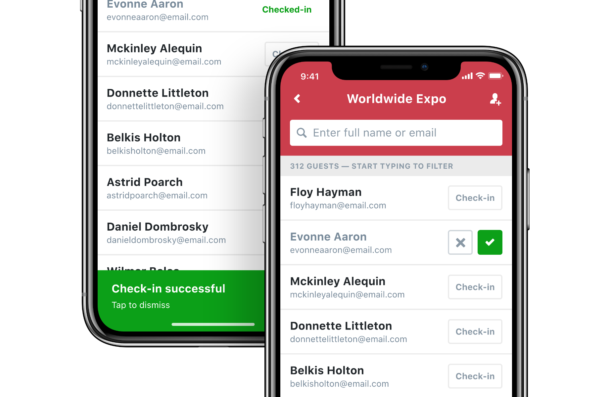

Q4 2018
New Check-in Experience in the Akkroo App

Context
The check-in functionality of the Akkroo product allows users to upload a list of leads and accounts they expect to meet at a trade show, empowering them to leverage information they may already have on important prospects and potentially making it easy to close the sale.
In the early stages of planning to deliver the , we decided that the existing check-in experience was not up to the standard that we were hoping to offer, so we were going to tackle it as a separate project after the launch of the new app.
The biggest issue of the existing experience was that it catered mostly to a B2C use case, a market that Akkroo was no longer after.
Problem
We framed this project around the user persona of the Sales Representative, who is the typical user of the Akkroo app.
Using the Jobs to Be Done framework, we arrived at the following goal:
As Serena Sales, I want to be able to access a list of attendees in the app in order to leverage existing information and measure attendance rate.
Discovery and ideation
Our main goal was to completely rethink the user flow for these types of events — it needed not just to work for our ICP customers, but also to provide enough value to get them to give it a try in favour of the basic lead capture type of event.
At this time, check-in type events hovered around 10% of all events in Akkroo, with basic lead capture type making up the remaining 90%.
We also knew from the beginning of this project that this was a special one: the solution we came up to lookup attendees would eventually power the ability for our users to tap into their CRM and MA databases — or potentially any other source.
When looking at the user flow, we aimed to remove points of stress for the user — instances where they were forced to make a decision despite not having the information required to do so.
The old check-in experience user flow.
One of these instances was when the app asked the users whether the person they were speaking to was on the list of attendees. It’s simply unreasonable to expect app users to remember a list of all the attendees at an event, and they ended up understandably frustrated.
The solution was to have the user type the name (or email) of the person they’re speaking to and then present them the relevant action: create a new lead if the name is not on the list, show them the existing profile if it is.
By presenting these prompts in a smart way, we're helping the user do their job without getting in the way.
The same applies to the actions you can perform with your attendees. If, for instance, the user is required to collect additional data before they’re able to check a lead in, they’re only presented with the option to proceed to the data collection form.
Feedback sessions
Because this feature was completely new in the way that it mixed the ability to check attendees in, review existing information and capture new information, we worked very closely with some of our customers and have improved this functionality over many months.
The initial user flow was not the fastest, but it was deliberately designed in a way that helped the users paint a clear mental map of the new functionality. As they grew accustomed to the new user flow, they started asking for quicker ways to navigate it — we obliged by simplifying it and offering shortcuts for the power users.
Outcome
Getting to rethink a traditional lead capture user flow from the ground up by adding multiple sources of information (starting with the list of attendees, but eventually extending to others), merging collection of data with data lookup in a seamless way, and doing it in a way that is easy even for non-tech-savvy people to use was very challenging, but ultimately very gratifying.
In the end, we turned a feature that could have been deprecated into an experience that is aligned with our ultimate goal for the product. All that was achieved by working closely with our customers, gathering tonnes of feedback, and continuous iteration.
Value added:
- Better experience that is more aligned with the market that Akkroo is catering to.
- Future-proof user flow that can surface information from any kind of source.
- There was an increase in usage of check-in events.